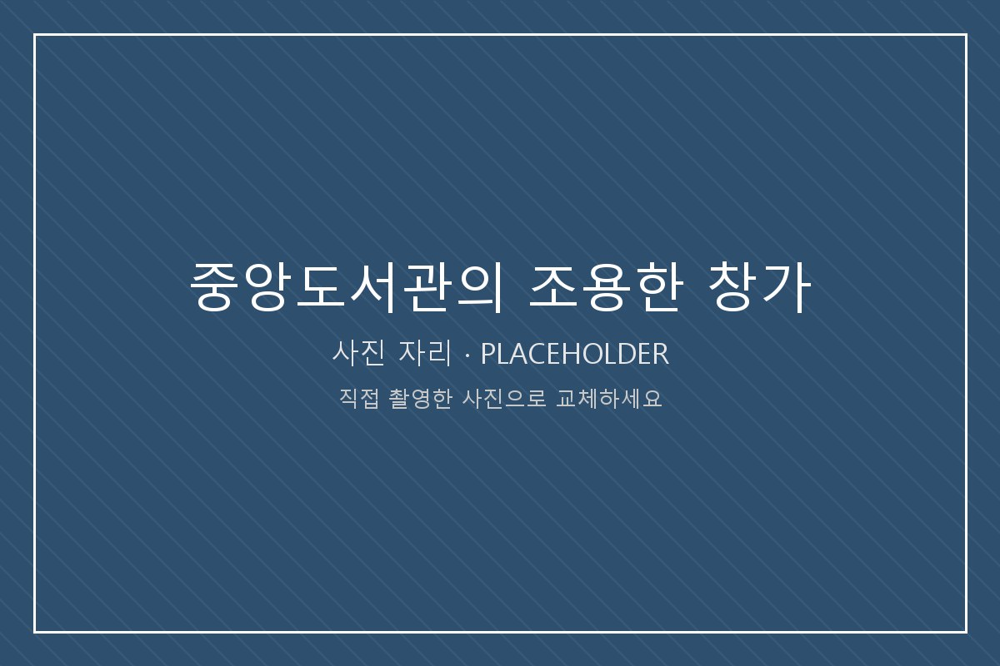

이 장소가 의미 있는 이유
1학년 첫 중간고사 기간에 자리가 없어서 헤매다가 겨우 앉은 곳이 이 창가였다. 그때는 그냥 남은 자리였는데, 시험이 끝나고 나서도 계속 그 자리를 찾게 됐다.
책상 앞이 벽이 아니라 창이라는 점이 생각보다 크게 다르다. 막히면 고개를 들어 밖을 보면 되고, 그 몇 초 동안 문장이 정리되는 일이 자주 있었다. 집중이 안 될 때 도망칠 곳이 창밖 하나뿐이라는 것도 이 자리의 장점이다.
찾아가는 방법
중앙도서관 정문으로 들어가 열람실 층으로 올라간 뒤, 서가 사이를 지나 건물 바깥쪽 벽면을 따라 놓인 좌석 줄로 이동한다. 창을 등지지 말고 창을 마주 보는 방향의 자리를 찾으면 된다.
여기에서 해볼 것
- 창밖에서 계절의 흔적 하나 찾아 기록하기
- 이 장소를 다섯 단어로 적어 보기
- 휴대전화를 가방에 넣고 30분만 버텨 보기
- 해가 기울면서 책상 위 그림자가 어디까지 오는지 보기
가기 좋은 시간
평일 오전 10시 전후가 가장 조용하다. 시험 기간에는 창가 자리 경쟁이 심하므로 개관 직후를 노리는 편이 낫다.